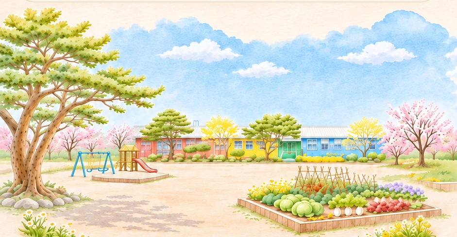
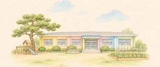

양덕분교는 대안학교인가요?
아닙니다. 양덕분교는 경기도 양주시 남면에 있는 남면초등학교의 공립 분교장입니다.
대안학교나 사립학교는 아니지만, 작은 규모의 학교생활과 텃밭·문화예술·독서·과학 등 다양한 교육활동을 만날 수 있는 곳입니다. 양주에서 자연과 가까운 작은 초등학교를 알아보거나 소규모 학교의 일상이 궁금하다면 양덕분교 이야기도 천천히 둘러보세요.
양덕 분교 산책지도
학부모들이 들려주는 작은 학교의 이야기
이 홈페이지는 학부모들이 자율적으로 제작·운영하는 비공식 소개 공간입니다. 학교 및 교육청의 공식 입장을 대변하지 않습니다.


2026 · 학교생활 안내 학교생활 안내 무료 방과후, 돌봄교실, 통학버스와 입학 정보학교 팜플렛 사진 2장 보기
아래 이야기 중 궁금한 활동을 눌러 둘러보세요.
경기도 양주시 남면에 자리한 남면초등학교 양덕분교장. 이곳에서 아이들이 만나고 배우고 경험하는 학교생활을 학부모들의 시선으로 담았습니다.
텃밭과 계절의 변화, 책과 함께하는 배움, 문화와 놀이, 과학과 새로운 기술을 만나는 시간까지. 그림 속 안내판을 따라 작은 학교의 이야기를 둘러보세요.
그림 속 나무 안내판을 누르면 학교의 이야기가 열려요.
2026학년도 학교 팜플렛 · 눌러서 사진 2장 보기
경기도 양주시 남면에 자리한 남면초등학교 양덕분교장.
이곳에서 아이들은 텃밭을 가꾸고 계절의 변화를 느끼며, 책과 문화예술, 과학과 코딩을 만나고 다양한 배움을 경험합니다.
양덕분교의 또 다른 매력은 풍성한 체험학습입니다. 2026학년도 학교 안내문에는 농촌 자연체험, 박물관 견학, 수학여행과 전교생 야영, 진로체험, 공연 관람, 스케이트 캠프 등 다채로운 활동이 담겨 있습니다.
작은 학교지만, 아이들이 만나는 세상은 작지 않습니다.
학부모들이 직접 전하는 양덕분교의 학교생활을 산책하듯 둘러보세요.
※ 2026학년도 활동은 해당 학년도 학교 안내문에 소개된 계획·프로그램 기준이며, 실제 진행 여부와 일정은 달라질 수 있습니다.
흙을 만지는 계절부터 책장 사이의 이야기까지, 네 가지 풍경을 따라가 보세요.
교육활동과 소규모 학급의 일상부터 통학과 학교생활까지, 학부모가 궁금해할 이야기를 모았습니다.
양덕분교는 양주시 남면에 자리한 작은 공립학교입니다. 소규모 학급에서 서로를 알아가며 배우고, 텃밭과 농촌체험으로 자연과 계절을 가까이합니다. 배려와 협력을 소중히 여기는 인성교육과 다양한 활동 속에서 아이들이 즐겁게 배우는 학교입니다.
텃밭과 계절 체험, 독서와 인문·경제활동, 문화예술과 스포츠, 로봇코딩·SW·AI 탐구 등 네 가지 이야기를 살펴볼 수 있습니다.
학교 소재지는 경기도 양주시 남면 은남로119번길 373입니다. 네이버 지도에서 양덕분교 찾기 ↗
통학구역, 선택적 공동통학구역 및 입학·전학 절차는 양덕분교 교무실 031-866-9536로 문의해 주세요.
이 안내는 학교·교육청의 공식 입장이 아닙니다. 학교 선택, 입학·전학 및 통학 가능 여부는 반드시 관계 기관의 최신 안내를 확인해 주세요.
아닙니다. 양덕분교는 경기도 양주시 남면에 있는 남면초등학교의 공립 분교장입니다.
대안학교나 사립학교는 아니지만, 작은 규모의 학교생활과 텃밭·문화예술·독서·과학 등 다양한 교육활동을 만날 수 있는 곳입니다. 양주에서 자연과 가까운 작은 초등학교를 알아보거나 소규모 학교의 일상이 궁금하다면 양덕분교 이야기도 천천히 둘러보세요.
반드시 그렇지는 않습니다. 공동통학구역 제도에 따라 학교 인근에 살지 않는 학생도 입학·전학할 수 있는 경우가 있습니다.
2026학년도 학교 안내문 기준으로 회천신도시·옥정동·고읍동·만송동·광사동 등이 공동통학구역으로 안내되어 있습니다. 다만 해당 지역의 모든 주소가 자동으로 해당하는 것은 아닙니다.
덕계·동두천 등 그 밖의 지역과 2027학년도 입학·전학 가능 여부는 별도 확인이 필요합니다. 자세한 사항은 양덕분교 교무실 031-866-9536로 문의해 주세요.
※ 통학구역은 학년도 및 구체적인 주소에 따라 달라질 수 있습니다. 2026학년도 안내와 확인 방법 →